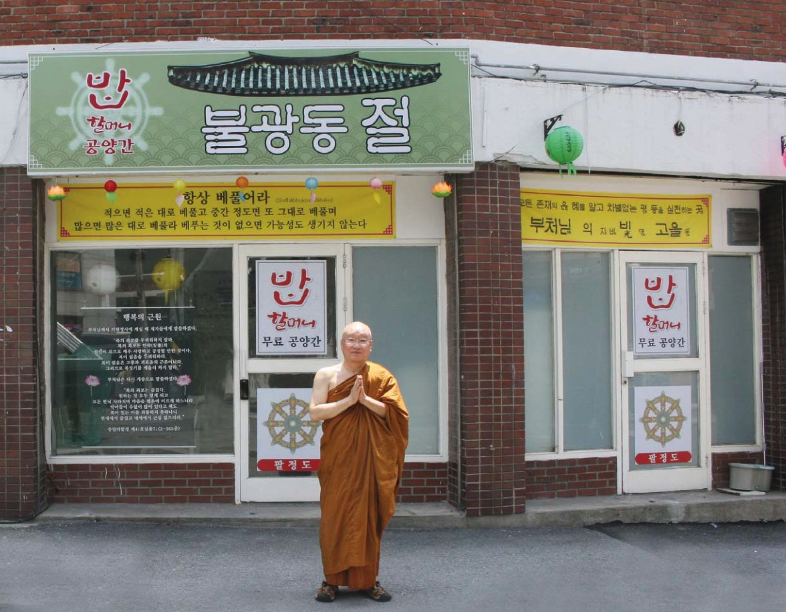
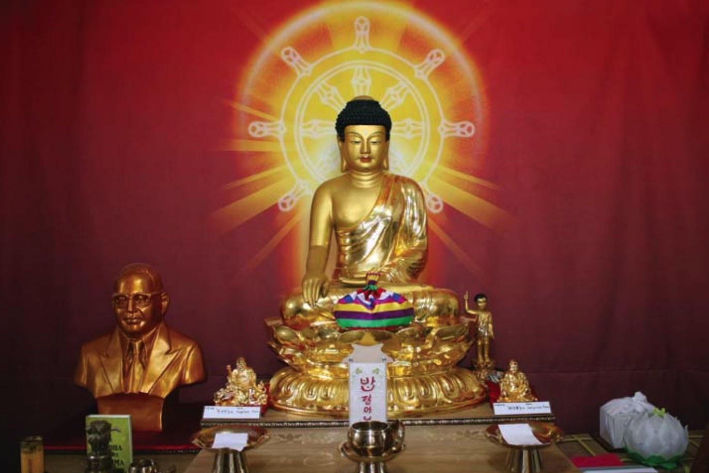
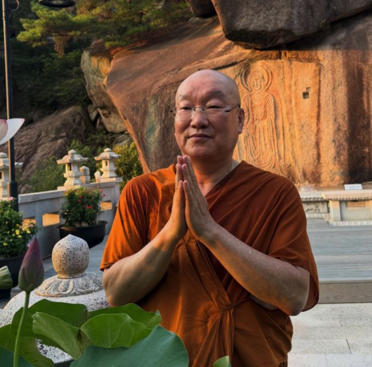
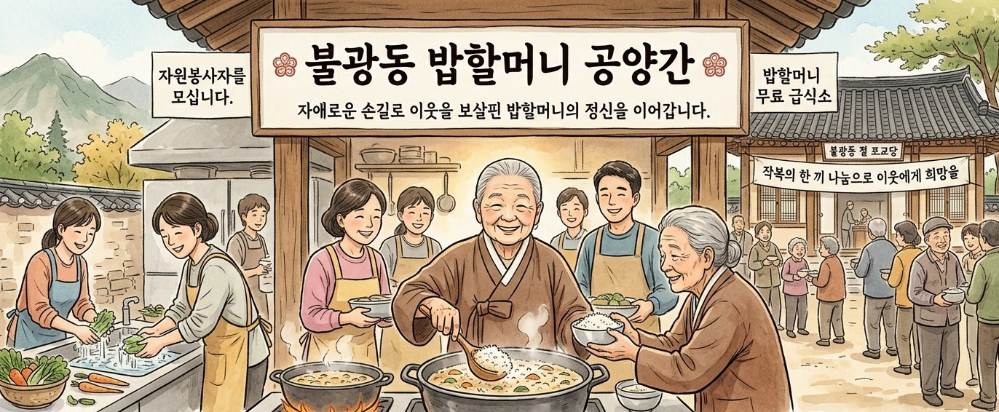

나눔과 보시의 정신 — 밥할머니의 대자비를 오늘의 도심에서 되살리는 곳입니다.


대한민국 서울 은평구에 자리한 불광동(佛光洞)은 ‘부처님의 은총의 빛이 비치는 지역’이라는 뜻을 지닌 이름입니다. 이 지역의 이름을 오늘날까지 존속하게 하는 역사 속 큰 인물이 있으니, 바로 ‘밥할머니’입니다.
불광동절은 그 밥할머니의 대자비 정신을 기리는 세계불교 정법보시종 ‘불광동 절’(포교당)입니다. 2025년 4월부터 주지 담마다나(선선) 스님이 운영하며, 임진왜란 당시 백성과 군사들을 위해 자신의 곳간을 열었던 밥할머니 정신을 오늘날 도심 속에서 다시 실천하고 있습니다.
서울 은평구에 위치한 부처님(佛) 빛(光) 고을(洞) ‘불광동 절’(주지 담마다나)은 각박한 세상 속 무료급식소 밥할머니 공양간을 운영하는 곳으로 알려져 있다. 역사 속 인물이었던 밥할머니의 정신을 이어받아 세상을 널리 이롭게 하는 데 앞장서 오고 있는 담마다나 스님은 나눔과 보시의 정신이야말로 이 시대의 값진 소금과 같은 역할을 할 것이라고 말문을 열었다.
“역사를 자세히 살펴보다 보면 우리가 알지 못한 여러 숨겨진 위인들이 존재합니다. 임진왜란 행주대첩의 치마부대를 직접 지휘한 여성 의병장 밥할머니 역시 한국의 숨겨진 보물같은 존재입니다. 밥할머니의 정신을 닮았으면 하는 마음으로 포교당을 운영하게 되었으며 밥할머니의 위패를 모신 국내 유일한 사찰로 자리매김하게 되었습니다. 한국 여성의 강인한 얼을 대변해 주신 밥할머니의 숭고한 희생정신을 우리는 잊지 말아야 할 것입니다.”
한국 최초로 부처님 재세시대의 모습 그대로 좌우보처로 상수제자이신 사리뿟다·목갈라나 존자님과 암베드카르 像을 모신 법당을 운영하고 있는 ‘불광동 절’은 인과법(因果法: 원인이 있음으로 결과가 있다)을 중시하는 사찰로 실천하는 곳입니다.
인과법은 도덕과 윤리의 근본으로, 인과법을 제대로 실천만 한다면 타인과 싸울 이유가 전혀 없습니다. 하지만 우리나라는 지금 인과법이 무너져 있습니다. ‘남의 눈에 눈물 내면 내 눈에서는 피눈물이 난다’는 말처럼 인과법은 우리 사회에 있어 가장 중요한 모멘텀 역할을 톡톡히 담당해 나갈 것입니다.

담마다나(선선) 스님은 무료급식소 운영 외에도 인천구치소에서 10년째 교정위원으로 활동하며 수용자 상담과 교화 활동을 이어오고 있습니다. 수용자 교정교화와 범죄 예방, 지역사회 정화 활동에 힘쓴 공로로 구치소장 표창패를 비롯해 인천지방검찰청 검사장, 법무부장관 표창 등을 받았습니다.

일주일에 한 번, 10여 명의 지역 이웃들에게 정성껏 지은 비빔밥 한 그릇을 올립니다. 배를 채우는 데서 그치지 않고, 공양을 받은 이들이 다시 누군가에게 베풀 수 있는 회향의 마음을 새기도록 합니다.
현재 공양주 사정으로 잠시 쉬고 있는 소중한 공간에 정성스러운 밥상의 온기를 불어넣어 주실 자비로운 봉사자의 손길을 기다립니다. 부처님의 보시와 나눔을 함께 실천할 인연을 모십니다.
“작복(作福)의 한 끼 나눔으로 이웃에게 희망을, 삶에는 안락을”
세계불교 정법보시종 ‘불광동 절’ 주지 담마다나(선선) 합장